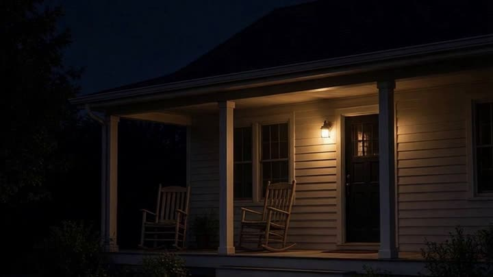

VIDEOOFFICIAL2:42The Story
Out of Lexington, KY, Wyatt Croft sings about tobacco barns, porch lights and the roads that lead home.
Made with AI. Wyatt Croft is an AI artist. The music, vocals, lyrics, video and images on this site are AI-made.